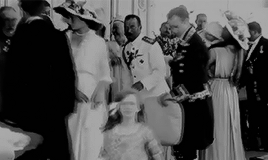

Float: (left, rigth, none); esta propriedade faz com
que um elemento saia do fluxo normal de exibição
e seja exibido a direita ou a esquerda d aestrutura com o restante
do conteudo ficando ao seu redor.
Claer: (left, right, both); esta propriedade
faz com que o efeito de float aplicado seja cancelado
apartir do elemento que realiza o cancelamento
muitas vezes queremos que uma imagem (ou video, ou bloco de destaque. etc.) fique alinhado ou a esquerda ou a direita com todo o restante do conteudo gerealmente textual neste caso é bastante util e tanbem a unica forma de realizarmos essa tarefa
Nicolau tornou-se czarevich após o assassinato de seu avô, Alexandre II no dia 13 de março de 1881 e à subsequente ascensão de seu pai, Alexandre III. Por razões de segurança o novo czar e sua família mudaram-se do Palácio de Inverno, em São Petersburgo[4] para sua residência no Palácio de Gatchina fora da cidade. A imperatriz Maria Feodorovna com o filho Nicolau em 1870 Nicolau e os irmãos foram rigidamente educados, dormiam em duras camas de armar e seus quartos eram pobremente mobiliados, exceto por um ícone religioso da Virgem e Filho rodeado por pérolas e outras gemas. Sua avó Maria Alexandrovna introduziu costumes ingleses dentro da família Romanov: mingau no café-da-manhã, banhos frios e abundante ar fresco.[5]
